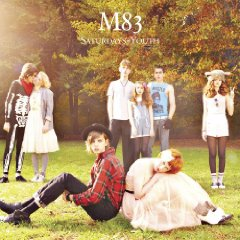

|
John Hughes, Molly Ringwald, Pretty in Pink, Breakfast Club, Psychedelic Furs, and John Cryer are all images the new M83 album resurrects. It's obvious from the album cover that M83 founder Anthony Golzalez and I have similar recollections of our youth. Many of the songs on this album could have come right out of a 1985 John Hughes soundtrack. M83 was actually in town on a couple of occasions this year playing ultra cool venues like the Triple Rock Social club. Their next performance is at Northrop in January. Sounds like they are gaining momentum. They deserve it in my opinion. |
 |